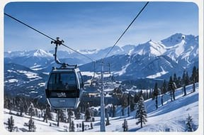
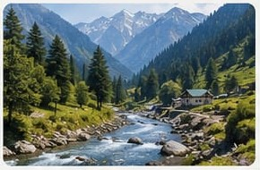
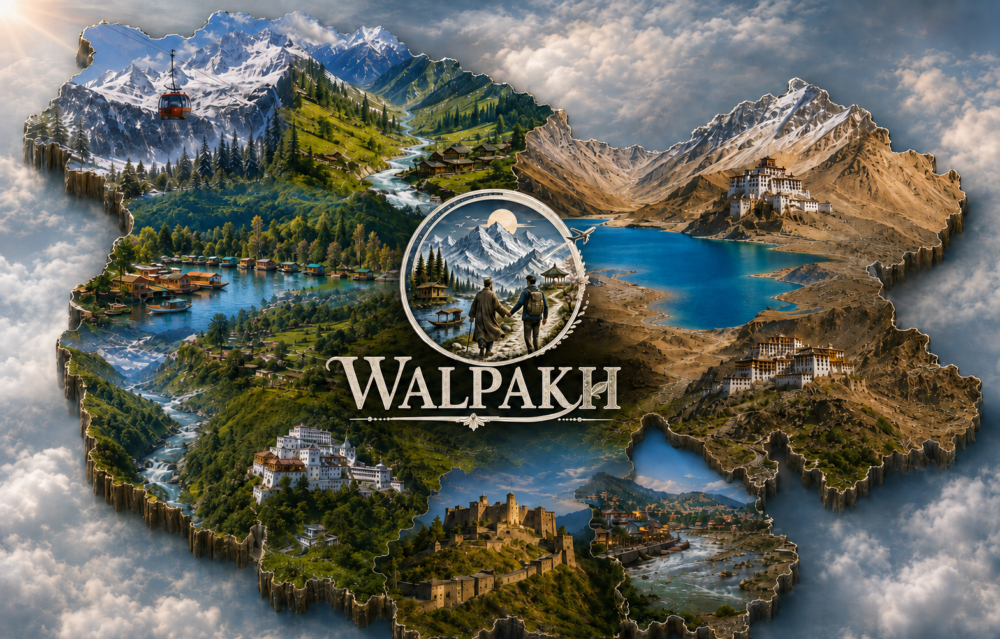

Kashmir First Feel
4 Days / 3 Nights
Srinagar
- Day 1: Srinagar arrival + Dal Lake sunset
- Day 2: Mughal Gardens & old city
- Day 3: Srinagar heritage walk
- Day 4: Airport departure
Affordable Comfortable Value for Money
10 Unique Kashmir Experiences BudgetChoose your Kashmir story
Thoughtfully arranged routes for first-time visitors, families and travellers looking for a genuine Kashmir experience.
4 Days / 3 Nights
Srinagar
4 Days / 3 Nights
Srinagar — Doodhpathri
5 Days / 4 Nights
Srinagar — Pahalgam
5 Days / 4 Nights
Srinagar — Gulmarg — Tangmarg
6 Days / 5 Nights
Srinagar — Yusmarg — Doodhpathri
6 Days / 5 Nights
Srinagar — Pahalgam — Verinag
6 Days / 5 Nights
Srinagar — Gulmarg — Doodhpathri
6 Days / 5 Nights
Srinagar — Pahalgam — Village Stay
7 Days / 6 Nights
Srinagar — Gulmarg — Pahalgam — Yusmarg
7 Days / 6 Nights
Srinagar — Gulmarg — Pahalgam — SonamargWhy travel with Walpakh?